정보처리기사(구) (2005-03-06 기출문제)
1과목: 데이터 베이스
1. 다음 질의에 대한 SQL 문은?
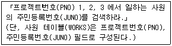
- SELECT WORKS FROM JUNO WHERE PNO IN 1, 2, 3;
- SELECT WORKS FROM JUNO WHERE PNO ON 1, 2, 3;
- SELECT JUNO FROM WORKS WHERE PNO IN (1, 2, 3);
- SELECT JUNO FROM WORKS WHERE PNO ON (1, 2, 3);
(정답률: 71%)

2. 데이터 모델에 관한 설명으로 가장 적합한 것은?
- 현실 세계를 데이터베이스에 표현하는 중간과정으로 데이터 구조를 논리적으로 표현하는 것이다.
- 논리적 데이터 모델의 대표적 모델로는 개체-관계 모델이 있다.
- 데이터베이스 설계 과정에서 데이터의 논리적, 물리적 구조를 표현하는 도구이다.
- 데이터 모델을 기술할 때는 구조만 기술하여야 한다.
(정답률: 49%)
3. 조건을 만족하는 릴레이션의 수평적 부분집합으로 구성하며 연산자의 기호는 그리스 문자 시그마(σ)를 사용하는 관계대수 연산자는?
- select 연산자
- project 연산자
- join 연산자
- division 연산자
(정답률: 77%)
4. 인덱스 순차 파일(ISAM:; Indexed Sequential Access Method)에 대한 설명으로 옳지 않은 것은?
- 인덱스를 저장하기 위한 공간과 오버플로 처리를 위한 별도의 공간이 필요하다.
- 실제 데이터 처리 외에 인덱스를 처리하는 추가적인 시간이 소모되므로 파일 처리 속도가 느리다.
- 인덱스 영역은 실린더 색인 영역, 섹터 색인 영역, 트랙 색인 영역으로 구분된다.
- 순차 처리와 직접 처리가 모두 가능하다.
(정답률: 52%)
5. 다음 내용이 설명하는 스키마의 종류는?
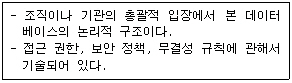
- internal schema
- conceptual schema
- external schema
- view schema
(정답률: 58%)
6. 데이터베이스 관리자(DBA)가 수행해야 하는 역할로 거리가 먼 것은?
- 시스템 감시 및 성능의 종합적인 분석과 성능의 개선
- 데이터의 접근 권한과 회복 절차 수립
- 데이터베이스의 구성요소 결정과 내장 저장구조 정의 및 수정
- 데이터베이스 조작어를 호스트 언어에 포함하여 데이터베이스 접근
(정답률: 60%)
7. 트랜잭션이 부분 완료(partial commit) 상태에 도달하였다가 실패(fail) 상태로 가는 경우에 해당하는 것은?
- 사용자의 인터럽트
- 교착상태(deadlock) 발생
- 트랜잭션 프로그램의 논리 오류
- 디스크 출력 도중의 하드웨어 장애
(정답률: 33%)
8. 릴레이션의 특성으로 적합하지 않은 것은?
- 중복된 튜플이 존재하지 않는다.
- 튜플 간의 순서는 없다.
- 속성간의 순서는 있다.
- 모든 속성 값은 원자 값을 갖는다.
(정답률: 79%)
9. 정규화의 목적으로 거리가 먼 것은?
- 삽입, 삭제, 갱신 이상의 발생을 방지한다.
- 데이터의 중복성을 최소화 한다.
- 효율적으로 데이터를 조작할 수 있다.
- 릴레이션을 분해하여 연산시간을 감소시킨다.
(정답률: 68%)
10. 관계형 데이터베이스에서 하나의 애트리뷰트(attribute)가 취할 수 있는 모든 원자 값의 범위를 무엇이라 하는가?
- Tuple
- Relation
- Domain
- Relation Instance
(정답률: 66%)
11. 데이터 모델의 구성 요소가 아닌 것은?
- 추상적인 개념으로 조직된 구조
- 구성 요소의 연산
- 구성 요소의 제약조건
- 구성 요소들의 저장 인터페이스
(정답률: 50%)
12. 분산 데이터베이스 설계시 고려사항으로 옳지 않은 것은?
- 작업부하(Work Load)의 노드별 분산 정책
- 지역의 자치성 보장 정책
- 데이터의 일관성 정책
- 분산 노드 간 데이터의 중복성 보장과 가용성 감소
(정답률: 72%)
13. 개체-관계(Entity-Relationship) 모델을 최초로 제안한 사람은?
- P. Chen
- E. F Codd
- Bill Gates
- Lawrence J. Ellison
(정답률: 77%)
14. DDL(Data Definition Language)의 기능이 아닌 것은?
- 데이터베이스의 생성 기능
- 병행처리시 Lock 및 Unlock 기능
- 테이블의 삭제 기능
- 인덱스(Index) 생성 기능
(정답률: 66%)
15. 분산 데이터베이스에 대한 설명으로 잘못된 것은?
- 분산 데이터베이스 관리시스템의 목적은 사용자들이 데이터가 어느 지역 데이터베이스에 위치하고 있는지를 알 수 있도록 하는 것이다.
- 분산 데이터베이스 관리시스템의 형태로는 동질 분산 데이터베이스 관리시스템과 이질 분산 데이터베이스 관리시스템으로 구분할 수 있다.
- 분산 데이터베이스에서의 수평분할은 전역 테이블을 구성하는 튜플들을 부분집합으로 분할하는 방법을 말 한다.
- 분산 데이터베이스는 데이터의 처리나 이용이 많은 지역에 데이터베이스를 위치시킴으로써 데이터의 처리가 가능한 해당 지역에서 해결될 수 있도록 하는 데이터베이스 시스템이다.
(정답률: 59%)
16. 다음 문장의 빈칸에 들어갈 단어는?
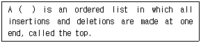
- stack
- queue
- list
- tree
(정답률: 76%)
17. 아래 infix로 표현된 수식을 postfix 표기로 옳게 변환한 것은?
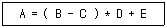
- = A * - B C + D E
- = A + + - B C D E
- A B C - D * E + =
- A B C * D - E + =
(정답률: 78%)
18. 다음 영문의 괄호 안에 가장 적합한 단어는?
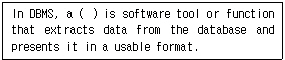
- tuple
- query
- entity
- attribute
(정답률: 59%)
19. 자료가 아래와 같이 주어졌을 때 선택 정렬(selection sort)을 적용하여 오름차순으로 정렬할 경우 pass 2를 진행한 후의 정렬된 값으로 옳은 것은?
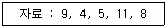
- 4, 5, 9, 8, 11
- 4, 5, 9, 11, 8
- 4, 5, 8, 11, 9
- 4, 5, 8, 9, 11
(정답률: 78%)
20. 해싱을 이용한 파일 구조에 해당되는 것은?
- 순차(sequential) 파일
- 직접(direct) 파일
- 색인 순차(indexed sequential) 파일
- 다중 키(multi-key) 파일
(정답률: 46%)
2과목: 전자 계산기 구조
21. 소프트웨어에 의하여 우선순위를 판별하는 방법을 무엇이라 하는가?
- 폴링
- 데이지체인
- 핸드쉐이킹
- 인터럽트 벡터
(정답률: 67%)
22. 명령어가 오퍼레이션 코드(OP code) 6bit, 어드레스 필드 16bit로 되어 있다. 이 명령어를 쓰는 컴퓨터의 최대 메모리 용량은?
- 16K word
- 32K word
- 64K word
- 1M word
(정답률: 54%)
23. 메이저 스테이트 중 하드웨어로 실현되는 서브루틴의 호출이라고 볼 수 있는 것은?
- FETCH 스테이트
- INDIRECT 스테이트
- EXECUTE 스테이트
- INTERRUPT 스테이트
(정답률: 44%)
24. 논리 마이크로 동작 중 Exclusive-OR과 같은 동작을 하는 것은?
- Selective-set 동작
- mask 동작
- compare 동작
- selective-clear 동작
(정답률: 40%)
25. 인스트럭션 세트의 효율성을 높이기 위하여 고려할 사항이 아닌 것은?
- 기억 공간
- 사용빈도
- 레지스터의 종류
- 주기억장치 밴드폭 이용
(정답률: 46%)
26. 다음 중 채널의 종류가 아닌 것은?
- software channel
- character multiplexer channel
- selector channel
- block multiplexer channel
(정답률: 49%)
27. 2진수 (1011)2 을 Gray code로 변환하면?
- 1001
- 1100
- 1111
- 1110
(정답률: 53%)
28. 랜덤(random) 처리가 되지 않는 기억장치는?
- 자기 드럼
- 자기 디스크
- 자기 테이프
- 자심
(정답률: 60%)
29. 다음 중 잘못 연결한 것은?
- Associative Memory-Memory Access 속도
- Virtual Memory-Memory 공간 확대
- Cache Memory-Memory Access 속도
- Memory Interleaving-Memory 공간 확대
(정답률: 60%)
30. 인터럽트 요청 신호회선 체제에 대한 설명 중 옳지 않은 것은?
- 단일 인터럽트 요청 신호회선 체제는 인터럽트 요청이 단일 회선을 이용하기 때문에 인터럽트를 요청한 장치 판별과정이 필요하다.
- 단일 인터럽트 요청 신호회선 체제는 폴드 인터럽트(Polled Interrupt) 방식이라고도 하며 복귀주소인 PC의 값을 메모리 0번지, 스택, 인터럽트 벡터 등 다양하게 저장한다.
- 고유 인터럽트 요청 신호회선 체제는 벡터 인터럽트(Vector Interrupt) 방식이라고도 하며 인터럽트 서비스 루틴으로 분기하는 명령들로 구성된 인터럽트 벡터를 이용한다.
- 고유 인터럽트 요청 신호회선 체제는 장치마다 고유한 인터럽트 요청 신호회선을 가지므로 인터럽트를 요청한장치 판별과정이 필요 없다.
(정답률: 27%)
31. 다음 주소 지정 방식 중 속도가 가장 빠른 주소 방식은?
- immediate addressing mode
- direct addressing mode
- indirect addressing mode
- index register
(정답률: 54%)
32. 0-번지 명령형(zero-address instruction format)을 갖는 컴퓨터 구조 원리는?
- An accumulator extension register
- Virtual memory architecture
- Stack architecture
- Micro-programming
(정답률: 64%)
33. 다음에 실행할 명령의 번지를 갖고 있는 레지스터는?
- MBR
- MAR
- IR
- PC
(정답률: 56%)
34. Von Neumann형 컴퓨터의 연산자들이 가져야 하는 기능과 가장 거리가 먼 것은?
- 증폭 기능
- 제어(control) 기능
- 전달(transfer) 기능
- 함수 연산(functional operation) 기능
(정답률: 66%)
35. 그림과 같은 회로는 무엇인가?
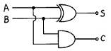
- 반가산기
- 전가산기
- 반감산기
- 전감산기
(정답률: 61%)
36. 간접 상태(indirect state) 동안에 수행되는 것은?
- 명령어를 읽는다.
- 오퍼랜드의 주소를 읽는다.
- 오퍼랜드를 읽는다.
- 인터럽트를 처리한다.
(정답률: 74%)
37. 다음 기억장치 중 CAM(Content Adderssable Memory)이라고 하는 것은?
- 주기억 장치
- Cache 기억장치
- Virtual 기억장치
- Associative 기억장치
(정답률: 55%)
38. 데이지체인(daisy-chain) 우선순위 인터럽트 방법에 대한 설명 중 옳은 것은?
- 소프트웨어적으로 가장 높은 순위의 인터럽트의 소스부터 차례로 검사하여 그 중 가장 우선순위가 높은 소스를 찾아낸다.
- 인터럽트를 발생하는 모든 장치들을 직렬로 연결한다.
- 각 장치의 인터럽트 요청에 따라 각 비트가 개별적으로 세트될 수 있는 레지스터를 사용한다.
- CPU에서 멀수록 우선순위가 높다.
(정답률: 50%)
39. 전가산기(full adder)의 carry 비트를 논리식으로 나타낸 것은?(단, x, y, z 는 입력, C (carry)는 출력)
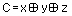
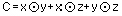
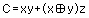
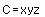
(정답률: 54%)
40. 다음 주변장치 중 library program들을 기억시켜 두는데 가장 적합한 것은?
- magnetic tape
- magnetic disk
- paper tape
- terminal
(정답률: 59%)
3과목: 운영체제
41. 해싱 등의 사상 함수를 사용하여 레코드 키에 의한 주소 계산을 통해 레코드를 접근할 수 있도록 구성한 파일은?
- 순차 파일
- 인덱스 파일
- 직접 파일
- 다중 링 파일
(정답률: 41%)
42. 디스크 스케쥴링시 발생하는 병목현상을 제거하기 위한 방법으로 옳지 않은 것은?
- 제어장치가 포화상태가 되면 해당 제어장치에 부착된 디스크의 수를 감소시킨다.
- 입출력 채널이 복잡하면 그 채널에 부착된 제어장치 중 몇 개를 다른 채널로 옮긴다.
- 입출력 채널이 복잡하면 채널을 추가한다.
- 입출력 채널이 복잡하면 그 채널에 부착된 제어장치를 통합한다.
(정답률: 45%)
43. 견고한 분산 시스템을 구축하기 위해서는 어떤 종류의 결함이 발생할 수 있는지 알아야 한다. 분산 시스템에서 발생할 수 있는 일반적인 결함으로 볼 수 없는 것은?
- 링크 결함
- 사이트 결함
- 메시지의 분실
- 데이터 결함
(정답률: 24%)
44. 은행가 알고리즘(Banker's Algorithm)은 다음 교착상태 관련 연구 분야 중 어떤 분야에 속하는가?
- 교착 상태의 예방
- 교착 상태의 회피
- 교착 상태의 발견
- 교착 상태의 복구
(정답률: 62%)
45. 자원이 총 12개이고, 현재 할당된 양이 10개(P1:2, P2:4, P3:4)일 경우 아래 시스템을 안전 상태가 되도록 하려면, 다음 보기 항 중 A, B의 요구량으로 적합한 것은?
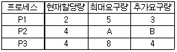
- 7, 3
- 6, 2
- 7, 4
- 6, 3
(정답률: 54%)
46. 자식 프로세스의 하나가 종료될 때까지 부모 프로세스를 임시 중지시키는 유닉스 명령어는?
- exit()
- fork()
- exec()
- wait()
(정답률: 68%)
47. NUR(Not-Used-Recently) 페이지 교체방법에서 가장 우선적으로 교체 대상이 되는 것은?
- 참조되고 변형된 페이지
- 참조는 안되고 변형된 페이지
- 참조는 됐으나 변형 안된 페이지
- 참조도 안되고 변형도 안된 페이지
(정답률: 68%)
48. 인터럽트에 대한 설명으로 옳지 않은 것은?
- 프로세서가 명령문을 수행하고 있을 때 다른 작업을 처리하기 위해 그 수행을 강제로 중단시키는 사건을 인터럽트라고 한다.
- 인터럽트 발생시 복귀 주소(return address)는 시스템 큐에 저장한다.
- 인터럽트가 발생하면 해당 인터럽트 처리 루틴으로 가서 그 사건을 처리한 후 원래 중단되었던 프로그램 지점으로 되돌아온다.
- 인터럽트의 종류 중 기계검사 인터럽트는 하드웨어에 고장이 생겼을 때 발생하는 인터럽트를 말한다.
(정답률: 57%)
49. 가상기억장치에 대한 설명 중 옳지 않은 것은?
- 동적주소 변환(DAT) 기법은 프로세스가 수행될 때 가상주소를 실주소로 바꾸어 준다.
- 크기가 고정된 블럭을 페이지라 하며, 크기가 변할 수 있는 블럭을 세그먼트라 한다.
- 인위적 연속성(artificial contiguity)이란 가상주소 공간상의 연속적인 주소가 주기억장치에서도 인위적으로 연속성을 보장해야 하는 성질을 말한다.
- 세그먼트 기법에서 한 프로세스의 세그먼트들은 동시에 모두 기억장치 내에 있을 필요가 없으며, 연속적일 필요도 없다.
(정답률: 27%)
50. HRN(Highest Response Scheduling) 스케쥴링 기법에서 우선순위 결정 방법은?
- (대기시간 + 서비스 시간) / 대기 시간
- (대기시간 + 서비스 시간) / 서비스 시간
- 대기시간 / (대기 시간 + 서비스 시간)
- 서비스 시간 / (대기 시간 + 서비스 시간)
(정답률: 71%)
51. UNIX에서 파이프의 의미로 가장 적합한 것은?
- 분산 처리를 위한 임시 화일
- 프로세스 간의 생산자-소비자 모델의 데이터 전달을 위한 큐
- 프로세스간의 통신을 위한 공유 메모리
- 세마포어에 의해서 공유가 제어되는 자원을 사용하기 위해 대기 중인 프로세스들의 큐
(정답률: 31%)
52. 현재 헤드의 위치가 50에 있고 트랙 0번 방향으로 이동하며 요청 대기 열에는 다음과 같은 순서로 들어 있다고 가정할 때 헤드의 총 이동거리가 가장 짧은 스케줄링은?
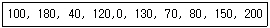
- C-SCAN 스케줄링
- FCFS 스케줄링
- SCAN 스케줄링
- SSTF 스케줄링
(정답률: 30%)
53. 분산 운영체제의 구조 중 아래 설명에 해당하는 구조는?
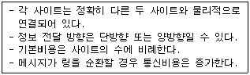
- ring connection
- hierarchy connection
- star connection
- partially connection
(정답률: 72%)
54. 시스템 성능 평가 요인과 거리가 먼 것은?
- 프로그램 크기
- 신뢰도
- 처리능력
- turnaround time
(정답률: 71%)
55. 시스템 소프트웨어와 그 기능에 대한 설명 중 옳지 않은 것은?
- 로더 : 실행 가능한 프로그램을 기억 장치로 적재
- 링커 : 사용자 프로그램 소스코드와 I/O 루틴과의 결합
- 언어 번역기 : 고급언어로 작성된 사용자 프로그램을 기계어로 번역
- 디버거 : 실행시간 오류가 발생할 경우 기계 상태 검사 및 수정
(정답률: 50%)
56. 운영체제의 일반적인 역할이 아닌 것은?
- 사용자들 간의 하드웨어의 공동사용
- 자원의 효과적인 운영을 위한 스케줄링
- 입, 출력에 대한 보조역할
- 실행 가능한 목적(object) 프로그램 생성
(정답률: 60%)
57. UNIX 시스템에서 파일보호를 위해 사용하는 방법으로 read, write, execute 등 세 가지 접근 유형을 정의하여 제한된 사용자에게만 접근을 허용하고 있다. UNIX의 이러한 파일보호 방법은 파일 보호 기법의 종류 중 무엇에 해당하는가?
- 파일의 명명(Naming)
- 접근제어(Access control)
- 비밀번호(Password)
- 암호화(Cryptography)
(정답률: 78%)
58. 교착상태 예방에 대한 설명 중 옳지 않은 것은?
- 교착상태의 예방은 자원의 이용율이 낮아지지만 널리 사용되는 방법이다.
- 교착 상태의 예방은 시스템의 운영 중 상황을 보아가면서 교착 상태 가능성을 피해가는 것이다.
- 교착상태의 예방은 가장 명료한 해결책이나 프로세스가 실행하기 전에 모든 자원을 배당시키는 등 엄격한 자원 배당과 해제 정책을 사용해야 한다.
- 교착상태 예방은 상호배제, 점유 및 대기, 비선점, 환형대기 중 하나이상 발생하지 않게 함으로써 예방이 가능하다.
(정답률: 36%)
59. 다중 프로그래밍 시스템에서 운영체제에 의하여 CPU가 할당되는 프로세스를 변경하기 위하여 현재 CPU를 사용하여 실행되고 있는 프로세서의 상태정보를 저장하고 제어권을 인터럽트 서비스 루틴에게 넘기는 작업을 무엇이라 하는가?
- semaphore
- monitor
- mutual exclusion
- context switching
(정답률: 61%)
60. 분산처리 시스템의 장점 중 무엇에 해당하는가?
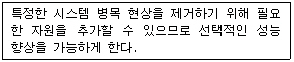
- 통신과 정보 공유(communication and information sharing)
- 점진적인 확장(incremental growth)
- 가용성(availability)
- 고장 허용성(fault tolerance)
(정답률: 69%)
4과목: 소프트웨어 공학
61. 프로토타입 모형의 장점으로 가장 적절한 것은?
- 비용과 시간의 절감
- 책임 한계의 명백한 구분
- 요구사항의 충실 반영
- 프로젝트 관리의 용이
(정답률: 69%)
62. 소프트웨어 자동화도구인 CASE 에 대한 설명으로 부적절한 것은?
- 차세대 CASE 도구는 통합화, 지능화로 정의될 수 있다.
- 설계지식이 없을 때 CASE 를 사용하면 효과적이다.
- CASE 정보저장소에는 데이터, 프로세스, 다이아그램, 규칙 등에 관한 정보가 저장된다.
- CASE 시스템은 다이아그램 도구, 설계분석기, 코드 생성기, 정보저장소, 프로젝트관리 도구, 재공학 도구, 프로토타이핑 도구 등으로 구성된다.
(정답률: 61%)
63. McCabe에 의해 제안된 소프트웨어의 복잡성 측정에 대한 설명으로 옳지 않은 것은?
- 영역은 그래프의 평면에서 둘러 쌓여진 부분으로 묘사될 수 있다.
- 영역의 수는 경계된 영역들과 그래프 외부의 비경계 지역의 수를 계산한다.
- 모듈크기의 실제 상한선은 존재하지 않는다.
- V(G)는 영역의 수를 결정함으로서 계산되어 진다.
(정답률: 59%)
64. 구조적 프로그래밍에서 사용하는 기본적인 제어구조에 해당하지 않는 것은?
- 순차(sequence)
- 반복(iteration)
- 호출(call)
- 선택(selection)
(정답률: 48%)
65. 소프트웨어 프로젝트 일정이 지연될 경우 개발 사업 말기에 인력을 추가로 배치하는 것은 사업 일정을 더욱 지연시키는 결과를 초래한다는 법칙은?
- Boehm
- Albrecht
- Putnam
- Brooks
(정답률: 72%)
66. 소프트웨어 공학의 전통적인 개발 방법인 선형 순차모형의 순서를 옳게 설명한 것은?
- 구현 - 분석 - 설계 - 테스트 - 유지보수
- 유지보수 - 테스트 - 분석 - 설계 - 구현
- 분석 - 설계 - 구현 - 테스트 - 유지보수
- 테스트 - 설계 - 유지보수 - 구현 - 분석
(정답률: 79%)
67. 유지보수(Maintenance) 작업의 분류상 가장 큰 비중(업무량 및 비용)을 차지하는 부분은?
- 교정정비(Corrective Maintenance)
- 조정정비(Adaptive Maintenance)
- 예방정비(Preventive Maintenance)
- 완전정비(Perfective Maintenance)
(정답률: 56%)
68. 람바우의 객체지향 분석 모델링(modeling)에 해당하지 않는 것은?
- relational modeling
- object modeling
- functional modeling
- dynamic modeling
(정답률: 58%)
69. 제품이 수행할 특정 기능을 알기 위해서 각 기능이 완전히 작동되는 것을 입증하는 검사로서, 기능 검사라고도 하는 것은?
- 블랙 박스 검사
- 그린 박스 검사
- 블루 박스 검사
- 화이트 박스 검사
(정답률: 57%)
70. 소프트웨어 품질보증 활동 중 정형검토(formal-review)의 목적이라고 할 수 없는 것은?
- 적정 인력의 투입 확인
- 기능과 로직의 오류 발견
- 사용자 요구사항의 확인
- 프로젝트 관리의 편리성
(정답률: 41%)
71. 소프트웨어 개발 단계와 테스트 전략이 옳게 연결된 항은?
- 설계 단계 - 시스템테스트
- 요구사항 분석 단계 - 검증테스트
- 코딩 단계 - 통합테스트
- 시스템엔지니어링 단계 - 단위테스트
(정답률: 37%)
72. 캡슐화(Encapsulation)의 장점이라고 볼 수 없는 것은?
- 소프트웨어 변경시 파급효과를 최소화 한다.
- 소프트웨어의 분석단계가 간단해진다.
- 소프트웨어 컴포넌트(Component)의 재사용을 쉽게 한다
- 캡슐화된 객체 간에 인터페이스가 단순화 된다.
(정답률: 43%)
73. 두 모듈이 동일한 자료구조를 조회하는 경우의 결합성이며 자료구조의 어떠한 변화, 즉 포맷이나 구조의 변화는 그것을 조회하는 모든 모듈 및 변화되는 필드를 실제로 조회하지 않는 모듈에까지도 영향을 미치게 되는 결합성은?
- data coupling
- stamp coupling
- control coupling
- content coupling
(정답률: 47%)
74. 소프트웨어의 품질 목표 중에서 옳고 일관된 결과를 얻기 위하여 요구된 기능을 수행할 수 있는 정도를 나타낸 것은?
- 정확성(correctness)
- 신뢰성(reliability)
- 효율성(efficiency)
- 무결성(integrity)
(정답률: 58%)
75. 소프트웨어 재사용을 통한 장점이라고 볼 수 없는 것은?
- 개발 시간과 비용을 감소시킨다.
- 소프트웨어 품질을 향상시킨다.
- 생산성을 증가시킨다.
- 고급 프로그래머 배출이 용이하다.
(정답률: 77%)
76. 객체지향 소프트웨어 공학의 상속성에 대해 바르게 설명한 것은?
- 상위 클래스의 메소드와 속성을 하위 클래스가 물려받는 것을 말한다.
- 데이터와 데이터를 조작하는 연산을 하나로 묶는 것을 말한다.
- 객체 클래스로부터 만들어진 하나의 인스턴스이다.
- 변수가 취할 수 있는 여러 가지 특성 중의 하나를 결정 받는 것을 말한다.
(정답률: 72%)
77. 소프트웨어 공학의 발전을 위한 소프트웨어 사용자(Software User)로서의 자세로 옳지 않은 것은?
- 프로그래밍 언어와 알고리즘의 최근 동향을 주기적으로 파악한다.
- 컴퓨터의 이용 효율이나 워크스테이션에 관한 정보들을 체계적으로 데이터베이스화 한다.
- 타 기업의 시스템에 몰래 접속하여 새로운 소프트웨어 개발에 관한 정보를 획득한다.
- 바이러스에 대한 예방에 만전을 기하여 시스템의 안전을 확보한다.
(정답률: 74%)
78. 소프트웨어의 문서(document) 표준이 되었을 때, 개발자가 얻는 이득으로 거리가 먼 것은?
- 시스템 개발을 위한 분석과 설계가 용이하다.
- 프로그램 유지보수가 용이하다.
- 프로그램의 확장성이 있다.
- 프로그램 개발 인력이 감소된다.
(정답률: 69%)
79. 다음의 자동화 예측 도구들 중 Rayleigh-Norden 곡선과 Putnam의 예측모델에 기반을 둔 것은?
- SLIM
- ESTIMACS
- SPQR/20
- WICOMO
(정답률: 41%)
80. 다음은 소프트웨어 실패율(오류율)을 나타내는 그림이다. "?"선이 지적하는 것은 무엇을 의미하는가?
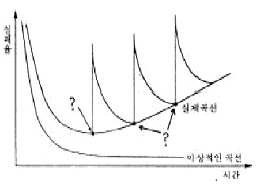
- 소프트웨어의 변경
- 소프트웨어의 인도
- 소프트웨어의 실행
- 소프트웨어 수명주기 각 단계
(정답률: 49%)
5과목: 데이터 통신
81. 공중 통신사업자로부터 회선을 대여 받아 고도의 통신처리 기능을 이용 부가적인 정보 서비스를 제공하는 정보통신 서비스 망은?
- MAN(Metropolitan Area Network)
- LAN(Local Area Network)
- VAN(Value Added Network)
- WWW(World Wide Web)
(정답률: 68%)
82. OSI 참조 모델 계층 구조로 최하위 계층부터 최상위 계층의 순서가 옳은 것은?
- 물리-네트워크-트랜스포트-데이터 링크-세션-프리젠테이션-응용
- 물리-네트워크-데이터 링크-트랜스포트-세션-프리젠테이션-응용
- 물리-데이터 링크-네트워크-트랜스포트-세션-프리젠테이션-응용
- 물리-데이터 링크-네트워크-트랜스포트-프리젠테이션-세션-응용
(정답률: 61%)
83. 자기 정정 부호의 하나로 비트 착오를 검출해서 1bit 착오를 정정하는 부호 방식은?
- parity code
- hamming code
- ASCII code
- EBCDIC code
(정답률: 48%)
84. 주파수 분할 다중화에 대한 설명 중 옳지 않은 것은?
- 동기식과 비동기식 다중화 방식이 있다.
- 다중화하고자 하는 각 채널의 신호는 각기 다른 반송 주파수로 변조된다.
- 부채널 간의 상호 간섭을 방지하기 위해 가드 밴드(guard band)를 주어야 한다.
- 전송매체에서 사용 가능한 주파수 대역이 전송하고자 하는 각 미널의 신호대역보다 넓은 경우에 적용된다.
(정답률: 31%)
85. 프로토콜의 변환이나 외부 네트워크와 접속하기 위한 목적으로 사용하는 기기는?
- 변복조기
- 허브
- 게이트웨이
- 브리지
(정답률: 54%)
86. 다음과 같은 기능을 제공하는 OSI의 계층 이름은?
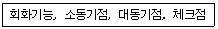
- 수송 계층
- 세션 계층
- 응용 계층
- MAC 계층
(정답률: 51%)
87. 8위상 2진폭 변조를 하는 모뎀이 2400baud라면 그 모뎀의 속도는?
- 2400bps
- 3200bps
- 4800bps
- 9600bps
(정답률: 49%)
88. 다음 LAN의 네트워크 토폴로지(topology)는 어떤 형인가?
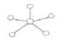
- 링형
- 성형
- 버스형
- 트리형
(정답률: 80%)
89. HDLC의 프레임 종류로 옳지 않은 것은?
- 정보 프레임
- 감시(감독) 프레임
- 비번호 프레임
- 플레그 프레임
(정답률: 40%)
90. 패리티 체크(parity check)를 하는 이유는?
- 검출된 에러를 정정하기 위하여
- 기억 장치의 용량을 검사하기 위하여
- 전송된 부호의 용량을 검사하기 위하여
- 전송된 부호의 에러를 검출하기 위하여
(정답률: 72%)
91. TCP/IP의 응용 계층 프로토콜과 관련이 없는 것은?
- IP
- FTP
- SMTP
- TELNET
(정답률: 45%)
92. 에러 검출 기법 중 에러가 발생한 블록 이후의 모든 블록을 다시 재전송 하는 방식은?
- Adaptive ARQ
- Go-back-N ARQ
- Selective ARQ
- Stop-and-wait ARQ
(정답률: 71%)
93. 부가가치통신망(VAN)이 제공하는 기능으로서 정보처리 기능에 속하지 않는 것은?
- 데이터베이스 구축
- 정보 검색 서비스
- 소프트웨어 개발
- 프로토콜 변환
(정답률: 26%)
94. 데이터 전달을 위한 회선 제어 절차의 단계를 순서대로 나열한 것은?
- 데이터 링크 확립-회선 연결-데이터 전송-데이터링크 해제-회선 절단
- 회선 연결-데이터 링크 확립-데이터 전송-데이터링크 해제-회선 절단
- 데이터 링크 확립-회선 연결-데이터 전송-회선 절단-데이터 링크 해제
- 회선 연결-데이터 링크 확립-데이터 전송-회선 절단-데이터 링크 해제
(정답률: 68%)
95. HDLC의 프레임 구성에서 프레임 검사 시퀀스(FCS) 영역의 기능은?
- 전송 오류 검출 기능
- 데이터 처리 기능
- 주소 인식 기능
- 정보 저장 기능
(정답률: 66%)
96. 베이직 제어 순서에서 사용되는 제어 캐릭터 중 한 개 또는 그 이상의 전송 종료를 표시하는 것은?
- SOH
- ETB
- NAK
- EOT
(정답률: 51%)
97. 아날로그 신호를 디지털 데이터 전송 방식으로 보내기 위해 필요한 신호 처리 과정이 아닌 것은?
- 표본화
- 분산화
- 부호화
- 양자화
(정답률: 73%)
98. 디지털 데이터를 아날로그 신호로 변환하는 방법이 아닌 것은?
- ASK
- FSK
- PSK
- PCM
(정답률: 69%)
99. 프로토콜의 기본적인 요소가 아닌 것은?
- 구문(syntax)
- 타이밍(timing)
- 제어(control)
- 의미(semantic)
(정답률: 40%)
100. 데이터의 전송 시에 일정 크기의 데이터 단위로 쪼개어 특정 경로의 설정 없이 전송되는 방식은?
- 메시지 교환 방식
- 전화회선 교환 방식
- 전용회선 교환 방식
- 데이터그램 패킷 교환 방식
(정답률: 60%)